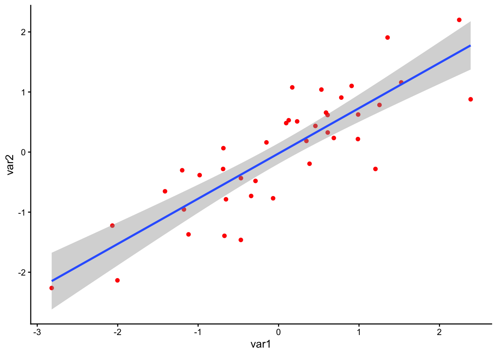
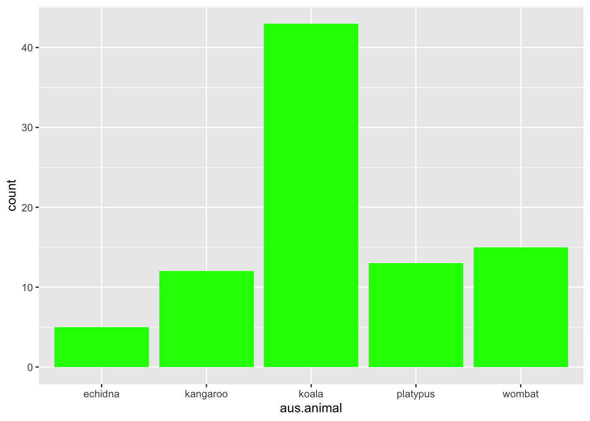
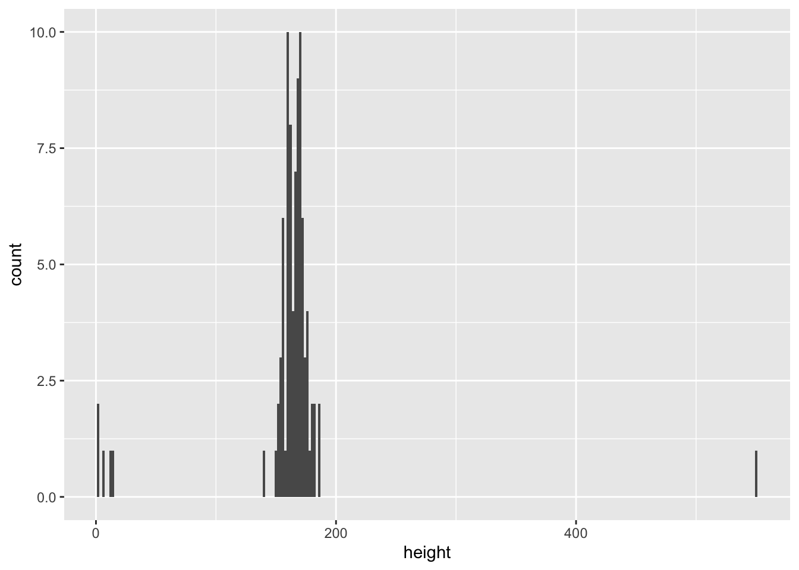
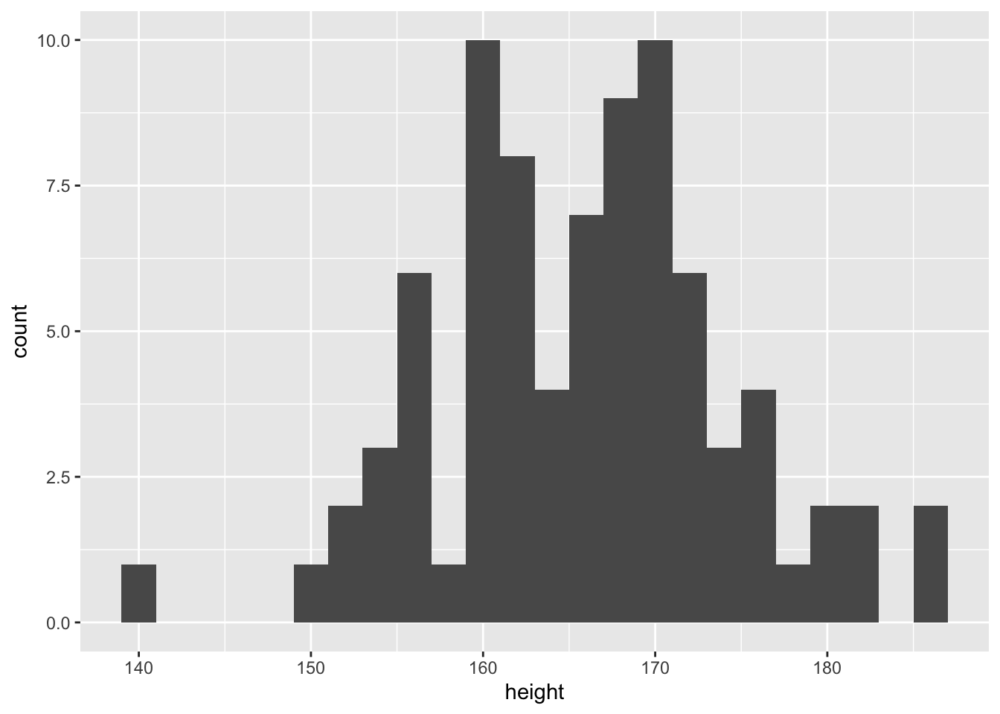
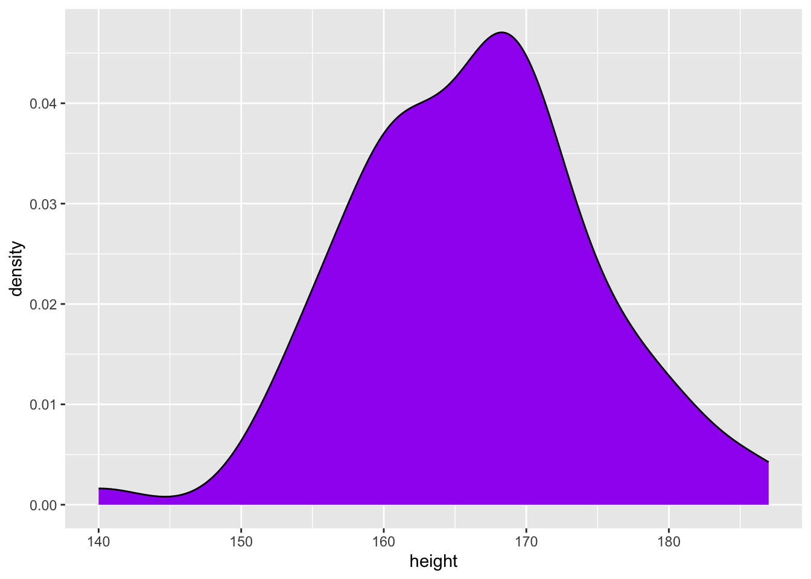
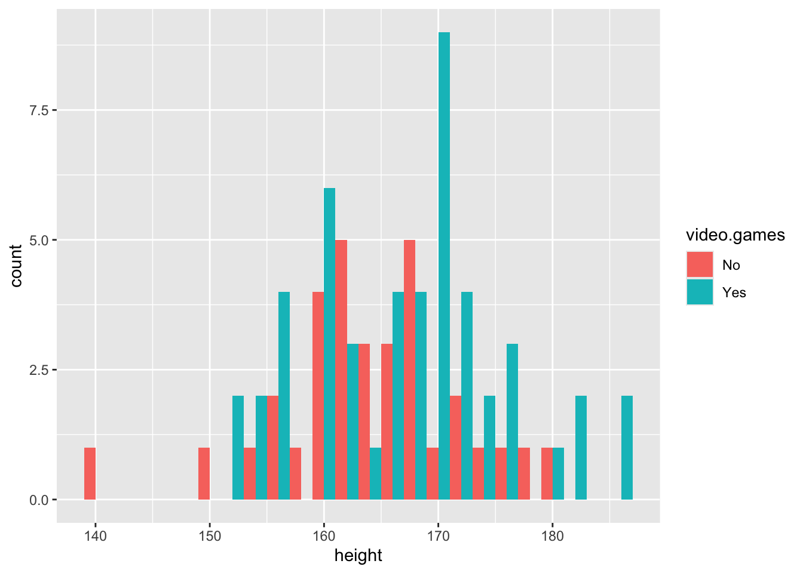
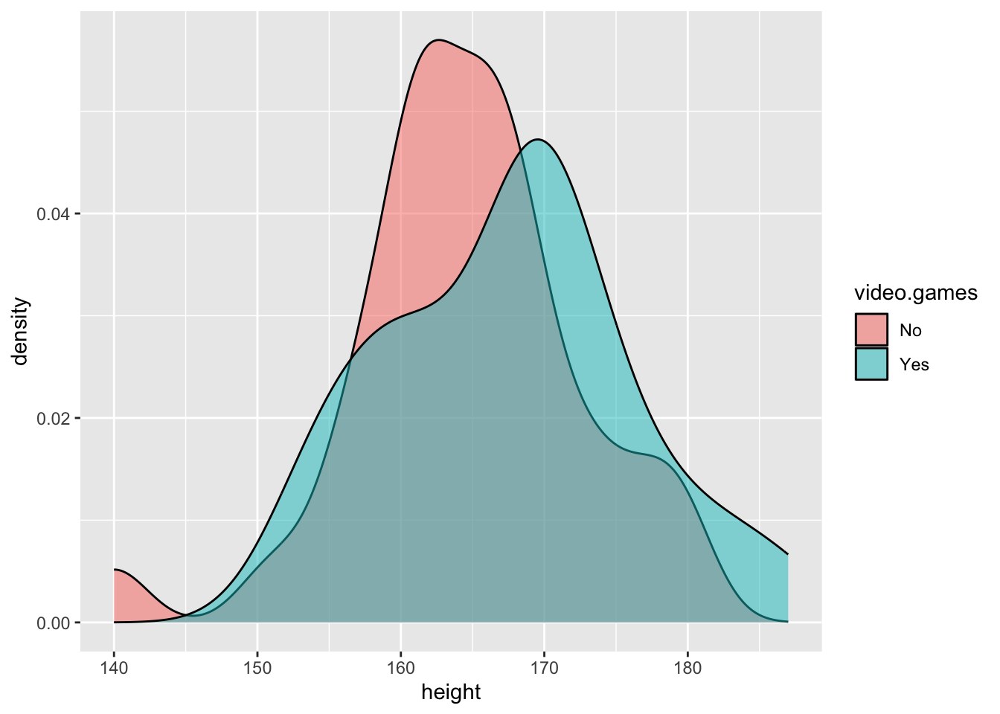
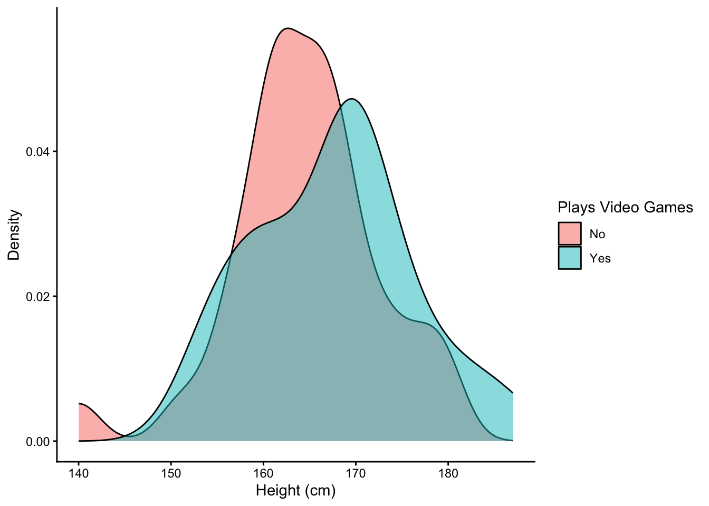

Content
Setup
These packages are required for today’s workbook. Remember you need to install packages onto your computer if you haven’t used them before.
library(tidyverse)
library(ggplot2)Visualising Your Data
There are lots of good reasons to visualise your data:
- It gives you the best idea of the distribution of your data.
- It can help inform the analysis you should conduct.
- It can identify if there is anything weird happening in your data.
However, there is an art for creating an informative plot. Unfortunately, there are no good rule-of-thumbs that work for all types of data, and each plot requires careful consideration depending on the data and the intended audience. The aim of this week is to give you idea of the tools at your disposal when making plots in R.
The Philosophy of ggplot2
R is celebrated for it’s ability to create high quality, publishable graphics. The ggplot2 package is one way you can make graphical representations of your data and is also highly flexible and customisable.
ggplot2 works by adding layers, which are themselves customisable. Layers are then stacked on top of each other and this can lead to quite complicated looking graphs, even if each individual component on its own is fairly simple.
Think of making a graph in ggplot similar to making a pizza. First, you need a base - in both cases, these act as a blank canvas for your masterpiece. You will then add components; for a pizza, these would be your toppings (e.g., you could add peppers), but for graphs these are known as geometric objects (or geoms for short). Geoms themselves are highly customisable by changing properties known as aesthetics; this is similar to how on a pizza the same toppings can come in different varieties (e.g., you could have green peppers, or red peppers).
This is what code to make a graph in ggplot looks like:
ggplot(data = example.data,aes(x = var1, y = var2)) +
geom_point(colour = "red") +
geom_smooth(method = "lm") +
theme_classic()
Let’s break down each of these components:
ggplot()
The ggplot() command can be considered the base of your
pizza. Here you specify the parameters of your graph, such as the data
you want to visualise (in the case above, a dataset called
‘example.data’), and what variable is on the x- or y-axis (var1 and var2
respectively in the example above). What you specify in this command
will be used by all following geoms.
The first thing you must specify is the data.frame that contains the
data you wish to visualise. The other thing you must specify is any
aesthetics that you wish to pass to all geoms in the plot. In this
example, we specify the variables in the data.frame we want on the x-
and y-axis. Whenever you specify an aesthetics that is dependent on
something in the data.frame, you must map it using the
aes() function.
Just to reiterate, any aesthetics that you specify here will be passed to all geoms.
Geometric Objects
Once you have your base, you then add geometric objects (or geoms for
short) - in the pizza analogy these are your toppings. Geoms details the
type of information you would like to include on your plot. Each geom
equates to an additional layer on your plot. You can have one or
multiple geoms on a plot. You can add as many geoms as you want simply
by using + symbol. In the example above, there are two
geoms: geom_point(), which plots the individual points, and
geom_smooth(), which plots the line-of-best-fit.
Aesthetics
Within each geom, are aesthetics commands. These are used to
customise the look of the plot. In the example above, in
geom_point() we changed the ‘colour’ aesthetic to edit the
colour of the points to red.
Here are examples of aesthetics you can change. Note that not all types of aesthetics make sense for all types of graphs:
- Position (both along the x- and y- axis)
- Colour
- Shape (for points)
- Size
- Opacity (referred to as alpha)
Note about aesthetics: as with the ggplot() command
above, if aesthetics are dependent on variables in your data.frame, you
need to assign it to the mapping argument using aes(). This
could be useful if you want different aesthetics to represent
differences in your data. Using different aesthetic properties for
different variables can lead to visualisations that convey a lot of
information, but are still readily interpretable.
Below is an example of representing data using multiple aesthetics. The data come from Lee, DeBruine, and Jones (2018) and investigates the relationship between a country’s life expectancy, and future discounting (i.e., the proportion of trial where participants choose a larger reward in the future, compared to a smaller, immediate reward). Each point represents a different country in the dataset. The country’s life expectancy is on the x-axis, while the corresponding proportion on the future discounting task is on the y-axis. The region of the world the country falls in is represented by colour, while the number of participants from that country is represented by the size of the point.
From the code below, can you understand how this plot was put together?
ggplot(discounting.data,aes(x = life.expectancy,y = dv)) +
geom_point(aes(size = n,colour = region)) +
theme_classic() +
xlab("Country Life Expectancy") +
ylab("Future Discounting")Other Things…
There are also a few other commands that can customise the look of your plot. You can change things like axis text size, labels, or split your graph into multiple panels. These don’t really fit well within the pizza analogy.
One Variable Graphs
Plotting the distribution of your variables gives you the best idea of the spread of your data. It can highlight whether there are problematic issues with your variable and help inform which analysis to conduct. For the remaining plots, we will be visualising variables collected as part of the class questionnaire.
Bar Charts - 1 Variable Categorical
Below is code for a bar chart that visualises the responses to the item asking about your favourite Australian animal. Bar charts are ideal for visualising count data. Each possible category is along the x-axis, while the number of responses associated with that category is on the y-axis. We can also make the bars a bright green colour by adjusting the ‘fill’ aesthetic… just for fun.
ggplot(data = data,mapping = aes(x = aus.animal)) +
geom_bar(fill = "green")
Histograms - 1 Variable Continuous
One way to visualise a continuous variable is via a histogram. Similar to a bar chart, all possible responses (or a range of responses) of a variable are on the x-axis, while the y-axis shows the counts associated with that value. Below is the code to make a histogram of people’s response to height:
ggplot(data = data,mapping = aes(x = height)) +
geom_histogram(binwidth = 2)
The first thing that should be clear is that there are responses that are outside the range of what we could reasonably expect someone’s height to be. This could be because participants misunderstood the question. This demonstrates one of the key reasons you should visualise your data - it is easy to identify whether there are potential issues that you need to deal with.
Let’s re-plot the data, but exclude participants who report being less than 100cm tall and more than 300cm tall.
plot.data <- filter(data,height > 100) %>%
filter(height < 300)
ggplot(data = plot.data,mapping = aes(x = height)) +
geom_histogram(binwidth = 2)
This looks more reasonable. We will continue plotting height excluding these participants.
Related to this is a density plot. Density plots are slightly different because, rather than represent counts, they represent percentage of responses that fall in a certain bandwidth.
ggplot(data = plot.data,mapping = aes(x = height)) +
geom_density(fill = "purple")
By adjusting some of the aesthetic components, we can begin to customise our plot, and make more complicated visualisations. In the code below, we change the ‘fill’ aesthetic to map onto whether participants like to play videogames. We can then visualise the height for videogamers vs non-videogamers separately on the one plot, either by adjusting the ‘position’ aesthetic, or the ‘alpha’ aesthetic (which adjusts opacity).
ggplot(data = plot.data,mapping = aes(x = height)) +
geom_histogram(aes(fill = video.games),binwidth = 2,position = "dodge")
Or…
ggplot(data = plot.data,mapping = aes(x = height)) +
geom_density(aes(fill = video.games),alpha = .5)
Customising The Look
Often to get the figures suitable for publication, or inclusion in a dissertation, you will need to customise some aspects of your plot. For instance, you will need to change the axis labels, or the theme of the plot.
By default, ggplot will use the variable names for labels on the
axes. You can set custom axis labels by adding xlab() or
ylab() when building your ggplot. You can also add a title
to the plot by adding ggtitle(). You can also set the theme
for a plot, which is a set of pre-chosen aesthetics. There are many
pre-existing themes, but an elegant, simple theme that will suit most
needs is the classic theme.
Using these components, we can edit the density plot above:
ggplot(data = plot.data,mapping = aes(x = height)) +
geom_density(aes(fill = video.games),alpha = .5) +
xlab("Height (cm)") +
ylab("Density") +
labs(fill = "Plays Video Games") +
theme_classic()
In The Coming Weeks…
In the coming weeks, we will be introducing a number of other geoms that can be used to represent different types of data, and geoms that can visualise the relationship between two variables. Like with all things covered in this module, if want to do a specific thing using ggplot, but we have not covered it here, you can find the answer by Googling how to do it (E.g., you could search for “ggplot how to change y-axis label”).